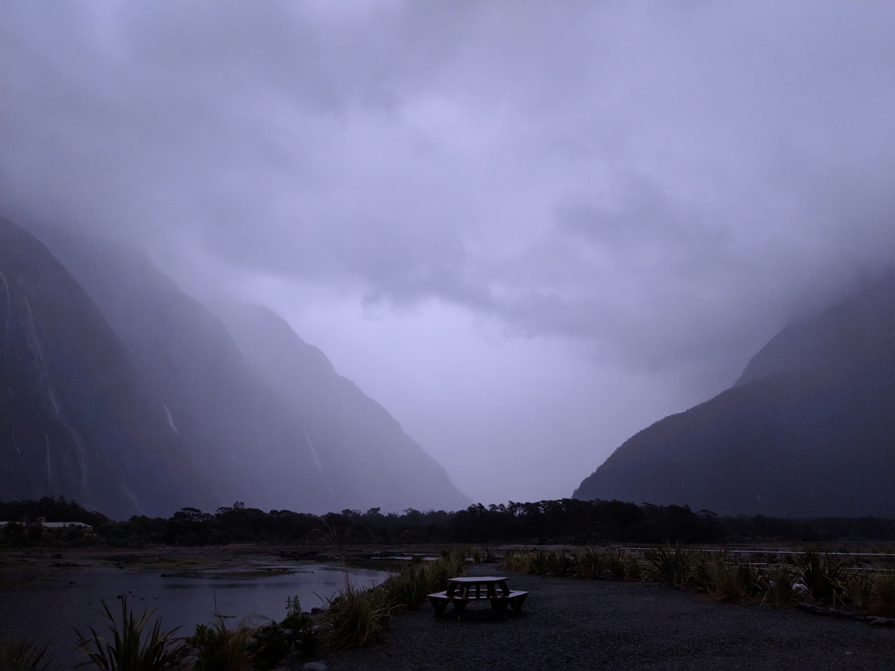
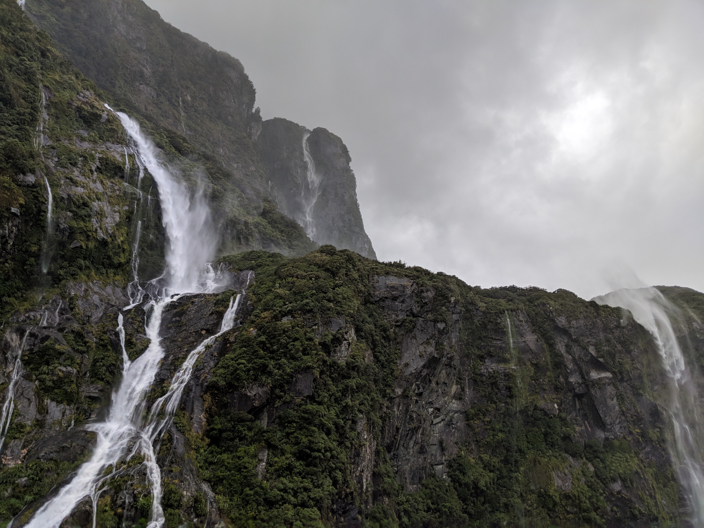
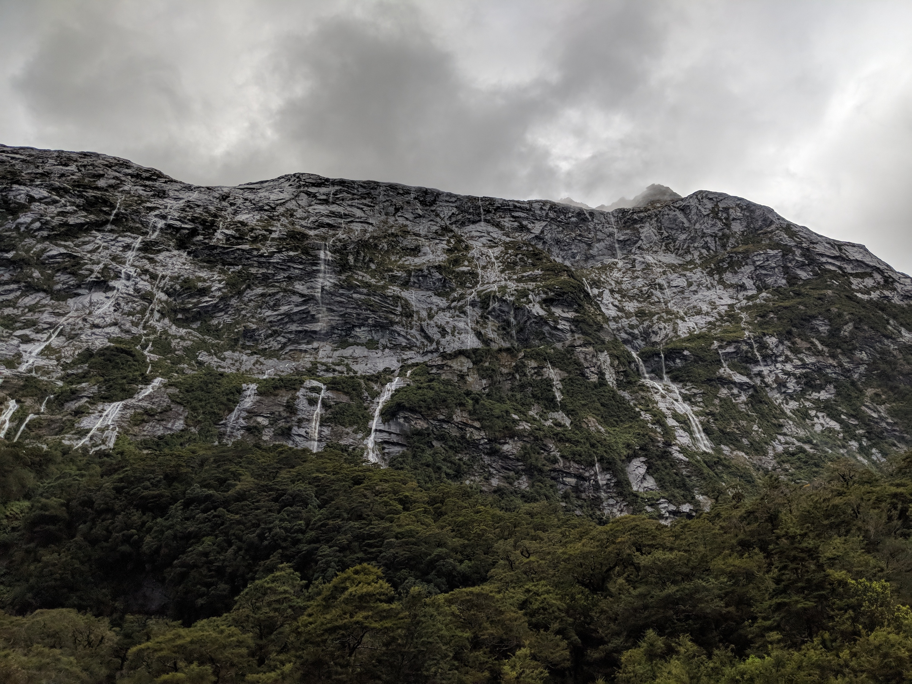
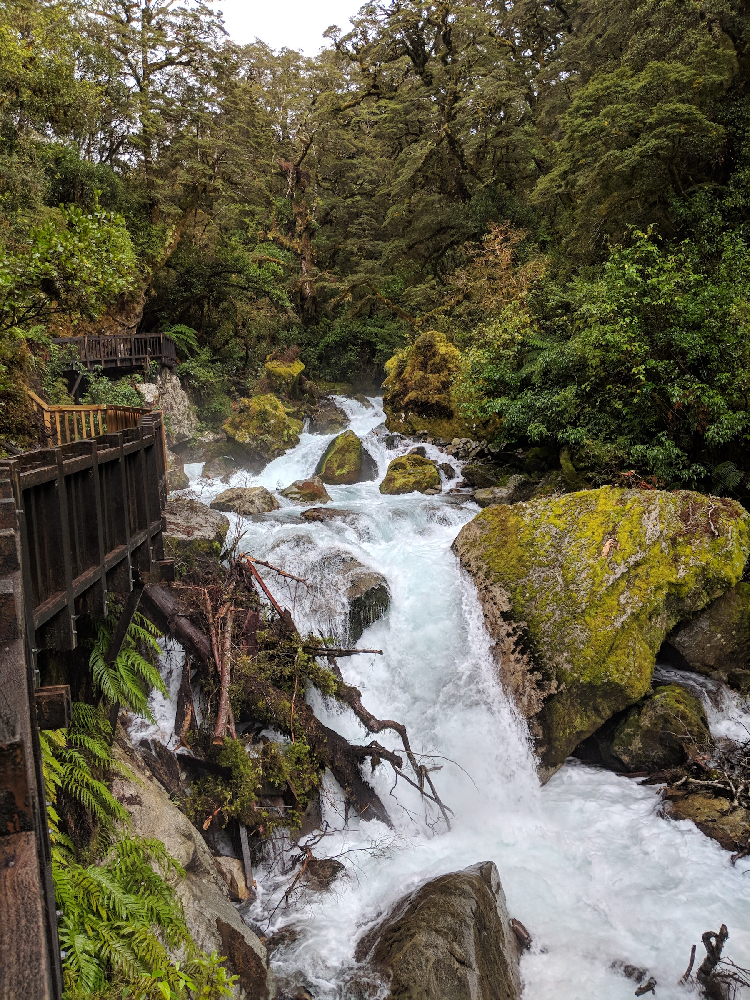
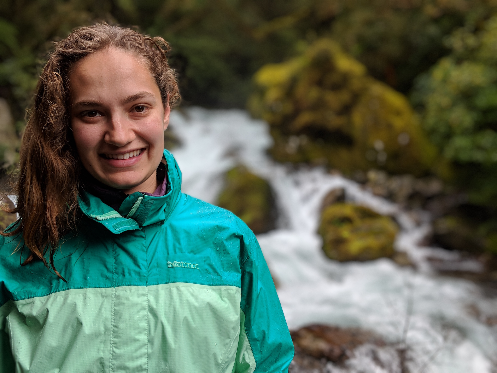

travelingmaterials
travelingmaterials
New Zealand Day 3
Tue 20 March 2018On the Bright Side, Waterfalls
My Fitbit claims I only got 5.5 hours of sleep last night, which may be part of why I've been viewing the day thgouh a haze of drowsiness. There was no helping this situation, we got back from the glowworm caves a little after 9:30 last night and we had to wake up at 4:30 am in order to complete a two hour drive before checking in to another boat ride at 7:00 am this morning. We were supposed to do a boat/kayak tour of the Milford Sound this morning, but we were informed on arrival that the trip was canceled due to the rain.
Instead, we took that tour guide's recommendation to wait for the sun to rise and then catch one of the smaller boat-based nature tours of the Milford Sound in order to see the waterfalls in the area. "They'll all be gushing, today," he promised us.

I'd been resistant to the idea of doing a boat tour for a long while. They are commonly listed as the thing to do in Fjordlands, but I generally am miserably sea sick on boats and only tolerate them as a means of getting to an activity I prefer (ie diving). But I took two Dramamine (the less drowsy kind, but this still contributes to the sleepiness) and rolled with it. On the bright side, the guide was right. There were waterfalls everywhere and they were indeed gushing.
I don't quite know how to choose the photos to illustrate this properly. But imagine, if you will, a pretty standard waterfall. Like this one.

Now just copy paste it at least five times onto every surface you can see.

Everywhere. There were waterfalls everywhere. The boat had good commentary and would get playfully close to some of the falls, allowing the people on board to take selfies with the falls and feel the spray. Ian had a great time. And I was, to their credit, pretty comfortable. They had lots of free coffee to stave off the tired, a partially covered top-level where you cower from the rain and occasionally venture out to take a photo, and a really cushion cabin.
We had gotten on one of the earliest boats of the day, so it was still only 11 am when we got back to the docks. It was still pouring, so Ian and I decided to stick to the shortest hikes (<1 hour each) on our way back to Te Anau with an emphasis on anything with a waterfall. This was not a choosy selection criterion because, as I may have mentioned, there were waterfalls anywhere there could possibly be waterfalls.

Fjordlands apparently gets around 240 rainy days a year, so its hikes are built for rain. There are wooden boards with metal meshes over them (to prevent you from slipping) in every place there may be a temporary creek, and on the most common short hikes there's some degree of coverage from above as well.
We also had all of the proper gear (rain jacket, rain pants, and waterproof boots), so we had a good time wandering in this rain forest. Occasionally we were rewarding with moments where the skies would clear up a little and present us with spectacular views (of more waterfalls).

Eventually we made our way back to our temporary home in Te Anau, where we took a long nap.